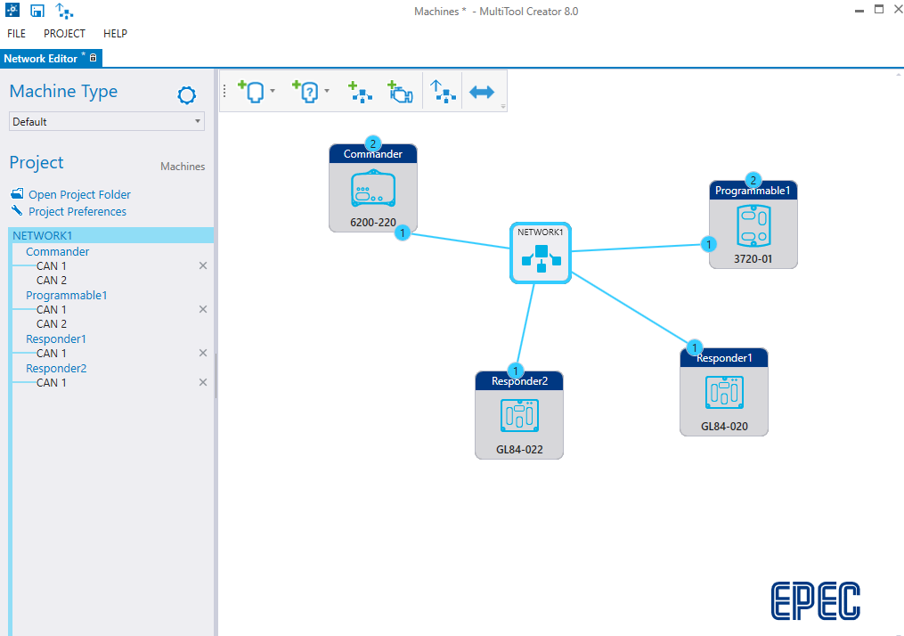
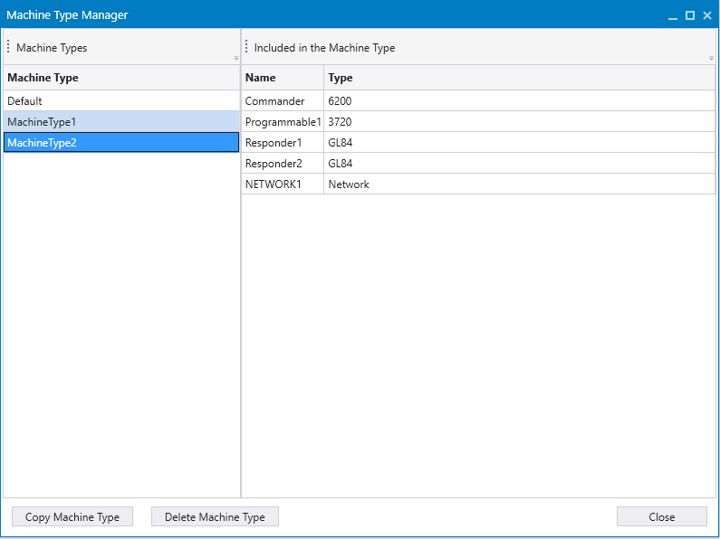
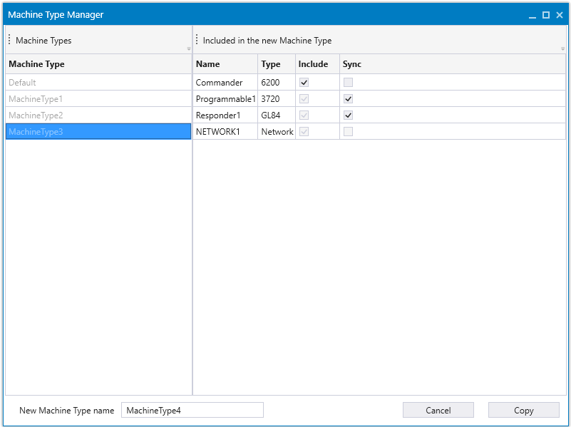

Managing Machine Types
The Machine Types feature adds the possibility to define different machine types in MTC. Traditionally, an MTC project defines one machine type with specific control units and hard coded settings for their I/O and CAN buses. Several machine types can be defined, that may include different control units and different settings. For example, one machine type may include a CANopen responder unit that is not included in other machine types.
Typically, at least one control unit is common between all machine types, but its settings may still differ in the different machine types. For example, its I/O pins can be configured to different modes in different machine types.
In a typical use case for the machine types feature, there are different machine models that are configured as machine types in MTC. For example, a joystick may be connected to the I/O of a CANopen commander unit in one machine type, but in another machine type, the joystick is a CANopen responder device that is connected to the commander units’ CAN bus. Another example for using the machine types feature, is that one model of the machine is more complex than others, although most of the features are the same. The more complex machine is defined as a separate machine type in MTC, and it may include several more CANopen devices than the other machine types.
A common code template (CODESYS project) is generated for all the machine types. It includes the initializations for all the different machine types. The code template runs the correct initializations and run time code, depending on the active machine type.
The advantage of using the Machine Types feature, is that when the machine types are similar to each other, only one CODESYS project needs to be maintained. Changes made to the common part of the application affect all the machine types.
Machine Type Manager
Machine types can be seen in the Network editor, under Machine Type. By default, there is only one machine type in the drop-down list, Default.

Machine types can be managed, using Machine Type Manager, which can be accessed from the settings icon.

Machine Type Manager can be used to:
-
Create a new machine type
-
Delete a machine type
-
Rename a machine type
|
|
The Machine Type name cannot contain spaces or special characters and must contain letters and numbers. A red error occurs if the name is not valid/does not meet requirements. |

When a machine type is selected, the following contents are shown for that machine type:
-
Unit name/network name
-
Unit type (e.g. 3724-01, 6200-020, Network, J1939/NMEA 2000, GL84)
Copying a Machine Type
When Copy Machine Type is selected, two new columns appear, that can be selected to either Include the unit or Sync the unit to the new machine type.
-
Include: select this, to copy the unit and it’s settings to the new machine type.
|
|
When a unit selected, the network is also automatically selected. |
-
Synchronize (Sync): select this, to synchronize the unit to the original machine type unit.
Enter the New Machine Type Name in the provided field.
Select Copy, to complete the process, or Cancel to cancel the new Machine type.
